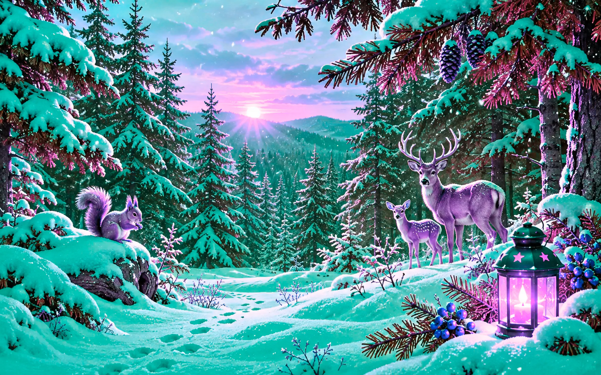

Žiacke aplikácie
›
Adventné kalendáre
🎄 Adventný kalendár
2.G
Načítavam…

1
🔒
2
🔒
3
🔒
4
🔒
5
🔒
6
🔒
7
🔒
8
🔒
9
🔒
10
🔒
11
🔒
12
🔒
13
🔒
14
🔒
15
🔒
16
🔒
17
🔒
18
🔒
19
🔒
20
🔒
21
🔒
22
🔒
23
🔒
24
🔒
Kalendár potrebuje zapnutý JavaScript.
⛶ Celá obrazovka
✕ Zavrieť